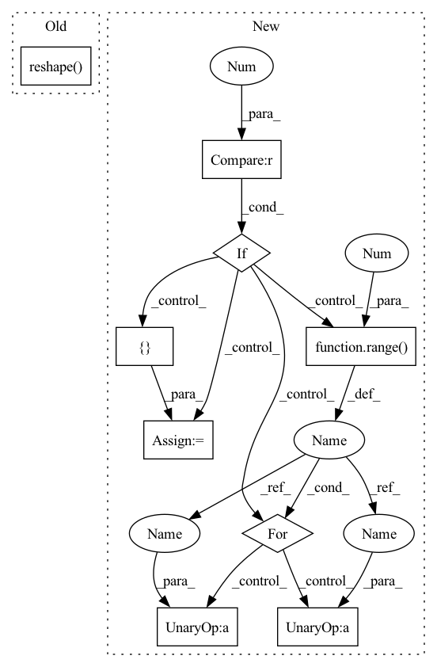

Pattern ID :3313

Before Change
x = F.relu(fc(x))
x = self.dropout(x)
x = self.fc[-1](x) // (B*N, 1)
x = torch.reshape(x, (B, N)) // (B, N)
return x
After Change
def forward(self, x):
B, N, C = x.shape
if self.context > 1:
z = [x]
for d in range(1, self.context // 2 + 1):
z_u = torch.zeros_like(x)
z_u[:, d:, :] = x[:, :-d, :] // i-d
z.append(z_u)
z_d = torch.zeros_like(x)
z_d[:, :-d, :] = x[:, d:, :] // i+d
z.append(z_d)
x = torch.cat(z, dim=2) // (B, N, C*width)
In pattern: SUPERPATTERN
Frequency: 3
Non-data size: 9
Instances
Fragment ID: 17230085
Project Name: keio-bioinformatics/mxfold2
Commit Name: c37c09d1ad2940a13dd4c82253c8607c8175115a
Time: 2019-11-06
Author: satoken@bio.keio.ac.jp
File Name: dnnfold/fold/layers.py
M Class Name: FCUnpairedLayer
N Class Name: FCUnpairedLayer
M Method Name: forward(2)
N Method Name: forward(2)
M Parent Class: nn.Module
N Parent Class: nn.Module
M File Name: dnnfold/fold/layers.py
N File Name: dnnfold/fold/layers.py
M Start Line: 117
M End Line: 123
N Start Line: 121
N End Line: 137
'>
Before Change
batch_size, c_in, T, n_vertex = x.shape
x_first_mul = torch.mm(x.reshape(-1, c_in), self.weight.reshape(c_in, -1)).reshape(n_vertex * self.Ks, -1)
x_second_mul = torch.mm(self.chebconv_matrix_list, x_first_mul).reshape(-1, self.c_out)
if self.bias is not None:
x_chebconv = x_second_mul + self.bias
After Change
x = x.reshape(n_vertex, -1)
x_0 = x
x_1 = torch.mm(self.chebconv_matrix, x)
if self.Ks - 1 == 0:
x_list = [x_0]
elif self.Ks - 1 == 1:
x_list = [x_0]
x_list.append(x_1)
else:
x_list = [x_0, x_1]
for k in range(2, self.Ks):
x_list.append(torch.mm(2 * self.chebconv_matrix, x_list[k - 1]) - x_list[k - 2])
x_tensor = torch.stack(x_list, dim=0)
x_mul = torch.mm(x_tensor.reshape(-1, self.Ks * c_in), self.weight.reshape(self.Ks * c_in, -1)).reshape(-1, self.c_out)
'>
Fragment ID: 17230117
Project Name: hazdzz/stgcn
Commit Name: cbe49f3295a8e608a3891688060d7da6b1f83801
Time: 2021-03-10
Author: raphaelpeo@gmail.com
File Name: model/layers.py
M Class Name: ChebConv
N Class Name: ChebConv
M Method Name: forward(2)
N Method Name: forward(2)
M Parent Class: nn.Module
N Parent Class: nn.Module
M File Name: model/layers.py
N File Name: model/layers.py
M Start Line: 211
M End Line: 212
N Start Line: 213
N End Line: 227
'>
Before Change
x = F.relu(fc(x))
x = self.dropout(x)
x = self.fc[-1](x) // (B*N, 1)
x = torch.reshape(x, (B, N)) // (B, N)
return x
After Change
def forward(self, x):
B, N, C = x.shape
if self.context > 1:
z = [x]
for d in range(1, self.context // 2 + 1):
z_u = torch.zeros_like(x)
z_u[:, d:, :] = x[:, :-d, :] // i-d
z.append(z_u)
z_d = torch.zeros_like(x)
z_d[:, :-d, :] = x[:, d:, :] // i+d
z.append(z_d)
x = torch.cat(z, dim=2) // (B, N, C*width)
'>
Fragment ID: 17230113
Project Name: mxfold/mxfold2
Commit Name: c37c09d1ad2940a13dd4c82253c8607c8175115a
Time: 2019-11-06
Author: satoken@bio.keio.ac.jp
File Name: dnnfold/fold/layers.py
M Class Name: FCUnpairedLayer
N Class Name: FCUnpairedLayer
M Method Name: forward(2)
N Method Name: forward(2)
M Parent Class: nn.Module
N Parent Class: nn.Module
M File Name: dnnfold/fold/layers.py
N File Name: dnnfold/fold/layers.py
M Start Line: 117
M End Line: 123
N Start Line: 121
N End Line: 137